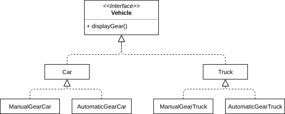
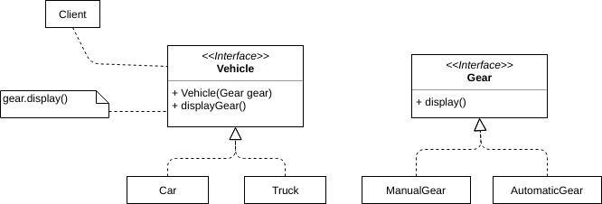
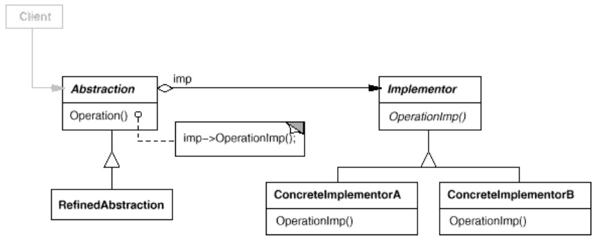

But : découpler une abstraction de ses implémentations de manières à ce que les deux puissent varier indépendamment.
Lorsqu'une abstraction peut avoir plusieurs implémentations, on utilise en général l'héritage. Cela permet de faire varier les implémentations sans modifier l'abstraction, mais ce n'est parfois pas assez flexible. L'héritage crée un lien permanent entre l'abstraction et ses implémentations, et on ne peut pas faire varier les deux indépendamment.
Le pattern Bridge permet de séparer complètement abstractions (handle) et implémentations (body).
On se retrouve avec deux hiérarchies d'héritage.
Exemple
(code dans VehicleDemo.java)On veut gérer différents types de véhicules avec différents types de boîtes de vitesse (gear = engrenage, boîte de vitesse).
L'abstraction est ici
Vehicle et ses implémentations sont les différentes variantes de véhicules avec leurs différents types de boîte.
Sans utiliser le pattern Bridge, on peut se retrouver avec la hiérarchie suivante :  Pose un problème : si on rajoute un véhicule
Van (camionette), on va se retouver avec 3 x 2 = 6 classes.
Si on rajoute en plus des boîtes semi-automatiques, on va avoir 3 x 3 = 9 classes.
Encore pire : si on ajoute une autre caractéristique aux véhicules, le nombre de sous-classes va exploser.
Par exemple, si un véhicule pouvait aussi avoir 2 ou 4 roues motrices, on aurait 3 x 3 x 2 = 18 classes.
Pour éviter cela,
- On isole les implémentations de l'abstraction. Ici, l'abstraction est
Vehicleet ses implémentations sont les différentes variantes de boîte de vitesse. - On introduit une nouvelle abstraction (
Gear). - On relie les abstractions en utilisant la composition.
On pourrait qualifier
Gear d'"abstraction concrète" (!) dans le sens où on identifie notre abstraction principale (Vehicle), et on regarde ce qui génère les différentes implémentations. Ici, c'est la notion de Gear ; on crée une abstraction, ce qui permet d'utiliser la composition.

public class VehicleDemo {
public static void main(String args[]){
Gear gear;
Vehicle vehicle;
gear = new ManualGear();
vehicle = new Car(gear);
vehicle.displayGear();
gear = new AutomaticGear();
vehicle = new Car(gear);
vehicle.displayGear();
gear = new ManualGear();
vehicle = new Truck(gear);
vehicle.displayGear();
gear = new AutomaticGear();
vehicle = new Truck(gear);
vehicle.displayGear();
}
}
java VehicleDemo Car handles Manual gear Car handles Auto gear Truck handles Manual gear Truck handles Auto gear
Exercice :
A partir de l'exemple
Faire un second Bridge pour ajouter cette notion.
Exemple possible de code de test (les affichages avec
A partir de l'exemple
VehicleDemo, introduire une nouvelle source de variabilité : 2 ou 4 roues motrices (DriveWheel).
Faire un second Bridge pour ajouter cette notion.
Exemple possible de code de test (les affichages avec
=== viennent de main()) :
java VehicleDemo === Voiture - boîte manuelle - 2 roues motrices === Car handles Manual gear Car handles 2 drive wheels === Voiture - boîte auto - 2 roues motrices === Car handles Auto gear Car handles 2 drive wheels === Camion - boîte manuelle - 4 roues motrices === Truck handles Manual gear Truck handles 4 drive wheels
Structure
Remarques
-
Le découplage complet entre abstraction et implémentation permet de changer d'implémentation à l'exécution.
On peut recompiler abstraction et implémentation indépendamment. - Si on a N abstractions et M implémentations, Bridge permet de passer de N x M classes à N + M classes.
- Bridge ne peut s'appliquer que si les deux hiérarchies (abstraction et implémentation) sont orthogonales (indépendantes).
-
Un intérêt de ce pattern est de pouvoir utiliser l'implémentation dans différentes abstractions (par exemple utiliser
Gearpour des pompes). - Abstract Factory permet de faire un bridge : on a plusieurs implémentations possibles, on en choisit une à l'exécution.